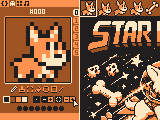

About
Have you ever imagined what it would be like if the Game Boy were a full-fledged computer? Were you mesmerized by the nostalgic glow of amber CRT monitors? Or maybe you're longing to dive into some retro-programming on your vintage IBM ThinkPad under MS-DOS?
Look no further, because I've got you covered.
NIBBLE8 is a fantasy video game console that comes bundled with an array of game creation tools for editing code, sprites, maps, and music. It's designed to ignite the joy of retro programming, though it does come with some technical limitations: enjoy a whopping 160x120 pixels display, a 4-color palette, a 240x240 pixels sprite sheet, and 4-channel sound, among other features.
Not only can you create your own games, but you can also share them with others.
Screenshots
